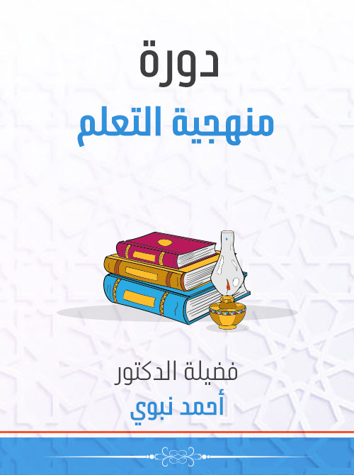
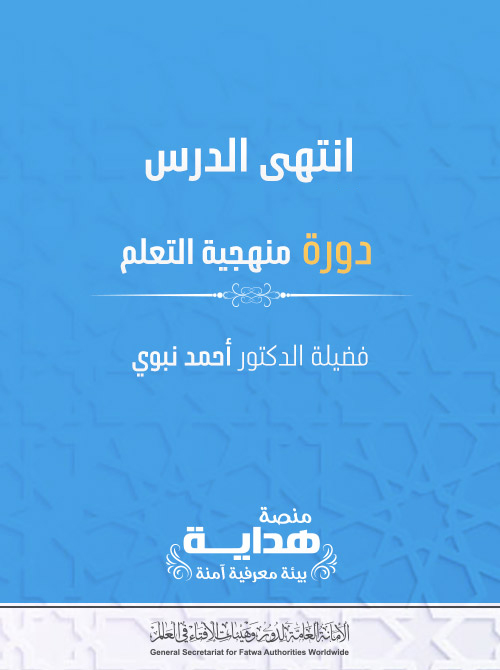

أ ولا: تعريف الكلمة والكلام

الكلام وما يتأل َّ ف منه
بسم الله الرحمن الرحيم، والصلاة والسلام على أشرف المرسلين، سيدنا محمد النبي الأمي الكريم، صلى الله عليه وعلى آلة وصحبه أجمعين، ثم أما بعد .
فقد درست عزيزي الطالب في الدرس السابق: مقدمة في علم النحو، وستدرس في هذا الدرس إن شاء الله: الكلام وما يتأل َّ ف منه .
فقد درست عزيزي الطالب في الدرس السابق: مقدمة في علم النحو، وستدرس في هذا الدرس إن شاء الله: الكلام وما يتأل َّ ف منه .
يرجى لك عزيزي الطالب بعد دراستك لهذا الدرس أن تتعرف على الأمور الآتية: [ 1 ] تعريف الكلمة والكلام، وأقسام الكلمة .
[ 2 ] تعريف الاسم والفعل والحرف .
[ 3 ] التدر ُّ ب على ضرب أمثلة للاسم والفعل والحرف .
[ 4 ] معرفة علامات الاسم .
[ 5 ] معرفة أنواع الفعل .
[ 6 ] معرفة علامات الفعل .
[ 7 ] معرفة علامة الحرف .
[ 2 ] تعريف الاسم والفعل والحرف .
[ 3 ] التدر ُّ ب على ضرب أمثلة للاسم والفعل والحرف .
[ 4 ] معرفة علامات الاسم .
[ 5 ] معرفة أنواع الفعل .
[ 6 ] معرفة علامات الفعل .
[ 7 ] معرفة علامة الحرف .
الكلمة: قول مفرد .
زيد– كتاب – قلم .
الكلام النحوي: فلا بُدَّ من أن يجتمع فيه أمور: أن يكون لفظًا، وأن يكون مركَّبًا، وأن يكون مفيدًا .
شرح التعريف
"أحمد" و "يكتب" و "سعيد" .
معنى كونه مركبًا : أن يكون مؤلفًا من كلمتين أو أكْثَرَ .
(العِلْمُ نَافِعٌ– الدَّرْسُ مُفِيدٌ–الأُسْتَاذُ حَاضِرٌ) .
فكلُّ عبارة من هذه العبارات تسمَّى كلامًا، وكل عبارة منها مؤلفةٌ من كلمتين أو أكْثَرَ، فالكلمة الواحدة لا تسمَّى كلامًا عند النحاة إلا إذا انْضَمَّ إليها غيرها: سواءٌ أَكان انضمام غيرها إليها حقيقةً كالأمثلة السابقة، أم تقديرًا، كما
إذا قال لك قائل: مَنْ أَخُوكَ؟ فتقول: مُحَمَّدٌ، فهذه الكلمة تُعتَبَرُ كلامًا، لأن التَّقدِير: مُحَمَّدٌ أَخِي: فهي في التقدير عبارة مؤلَّفة من ثلاث كلمات .
ومعنى كونه مفيدًا : أن يَحْسُنَ سكوتُ المتَكلم عليه، بحيث لا يبقى السَّامِعُ منتظرًا لشيءٍ آخر، فلو قلت: "إِذَا حَضَرَ الأُستَاذ" لا يسمى ذلك كلامًا، ولو أَنَّه لفظ مركب من ثلاث كلمات؛ لأن المخاطب ينتظر ما تقوله بعد هذا مِمَّا يَتَرَتَّبُ على حضور الأستاذ .
فإذا قلتَ: "إذَا حَضَرَ الأُسْتَاذُ أَنْصَتَ التَّلاَمِيذ" صار كلامًا لحصول الفائدة .
الْجَوُّ صَحْوٌ - الْبُسْتَانُ مُثْمِرٌ - الْهِلاَلُ سَاطِعٌ - السَّمَاءُ صَافِيَةٌ - يُضِيءُ الْقَمَرُ لَيْلاً - يَنْجَحُ المُجْتَهِدُ - لاَ يُفْلِحُ الكَسُولُ - لاَ إِلهَ إلاَّ الله - مُحَمَّد صَفْوَةُ الْمُرْسَلِينَ - الله رَبُّنَا - محمد نَبِيُّنَا .
ومعنى كونه مفيدًا : أن يَحْسُنَ سكوتُ المتَكلم عليه، بحيث لا يبقى السَّامِعُ منتظرًا لشيءٍ آخر، فلو قلت: "إِذَا حَضَرَ الأُستَاذ" لا يسمى ذلك كلامًا، ولو أَنَّه لفظ مركب من ثلاث كلمات؛ لأن المخاطب ينتظر ما تقوله بعد هذا مِمَّا يَتَرَتَّبُ على حضور الأستاذ .
فإذا قلتَ: "إذَا حَضَرَ الأُسْتَاذُ أَنْصَتَ التَّلاَمِيذ" صار كلامًا لحصول الفائدة .
الْجَوُّ صَحْوٌ - الْبُسْتَانُ مُثْمِرٌ - الْهِلاَلُ سَاطِعٌ - السَّمَاءُ صَافِيَةٌ - يُضِيءُ الْقَمَرُ لَيْلاً - يَنْجَحُ المُجْتَهِدُ - لاَ يُفْلِحُ الكَسُولُ - لاَ إِلهَ إلاَّ الله - مُحَمَّد صَفْوَةُ الْمُرْسَلِينَ - الله رَبُّنَا - محمد نَبِيُّنَا .

ثانيًا: أَقْسَامُ الكلمة
أولًا: الاسم
وفي اصطلاح النحويين : كلمةٌ دَلَّتْ عَلَى معنًى في نفسها، ولم تقترن بزمان .
محمدٍ، عليّ، ورَجُل، وَجَمل، ونَهْر، وتُفَّاحَة، ولَيْمُونَةٌ، وَعَصًا، فكل واحد من هذه الألفاظ يدل على معنى، وليس الزمان داخلًا في معناه، فيكون اسمًا .
علامات الاسم

ثانيًا: الفعل
الفعل في الاصطلاح: كلمة دلَّتْ على معنى في نفسها، واقترنت بأحد الأزمنة الثلاثة ـ التي هي الماضي، والحال، والمستقبل .
" كَتَبَ " فإنه كلمةٌ دالةٌ على معنى وهو الكتابة، وهذا المعنى مقترن بالزمان الماضي، ونحو " يَكْتُبُ " فإنه دال على معنى ـ وهو الكتابة أيضًا ـ وهذا المعنى مقترن بالزمان الحاضر، ونحو "اكْتُبْ" فإنه كلمة دالة على معنى ـ وهو الكتابة أيضًا ـ وهذا المعنى مقترن بالزمان المستقبل الذي بعد زمان التكل م .
إضافية: ومثل هذه الألفاظ- السابقة-: نَصَرَ يَنْصُرُ انْصُرْ، وَفَهِمَ " كَتَبَ " فإنه كلمةٌ دالةٌ على معنى وهو الكتابة، وهذا المعنى مقترن بالزمان الماضي، ونحو " يَكْتُبُ " فإنه دال على معنى ـ وهو الكتابة أيضًا ـ وهذا المعنى مقترن بالزمان الحاضر، ونحو "اكْتُبْ" فإنه كلمة دالة على معنى ـ وهو الكتابة أيضًا ـ وهذا المعنى مقترن بالزمان المستقبل الذي بعد زمان التكل م .
يَفْهَمُ افْهَمْ، وَعَلِمَ يَعْلَمُ اعْلَم، وَجَلَسَ يَجَلِسُ اجْلِسْ، وَضَرَبَ يَضْرِبُ اضْرِبْ .
والفعل على ثلاثة أنواع: ماضٍ ومُضَارِعٌ وأَمْرٌ: [1] الماضي: ما دَلّ على حَدَثٍ وَقَعَ في الزَّمَانِ الذي قبل زمان التكلُّم .
كَتَبَ، وَفَهِمَ، وَخَرَجَ، وَسَمِعَ، وَأَبْصَرَ، وَتَكَلَّمَ، وَاسْتَغْفَرَ، وَاشْتَرَكَ [2] المضارع: مَا دَلَّ عَلَى حدثٍ يقع في زمان التكلُّم أو بعده .
يَكْتُبُ، وَيَفْهَمُ، وَيَخْرُجُ، وَيَسْمَعُ، وَيَنْصُرُ، وَيَتَكلمُ، وَيَسٍتَغْفِرُ، وَيَشْتَرِكُ .
[3] الأمر : ما دَلَّ على حَدَثٍ يُطْلَبُ حُصوله بعد زمان التكلُّم .
اكْتُبْ، وَافْهَمْ، واخْرُجْ، واسْمَعْ، وَانْصُرْ، وَتَكَلَّمْ، وَاسْتَغْفِرْ، وَاشْتَرِكْ
أ نواع الفعل
كَتَبَ، وَفَهِمَ، وَخَرَجَ، وَسَمِعَ، وَأَبْصَرَ، وَتَكَلَّمَ، وَاسْتَغْفَرَ، وَاشْتَرَكَ [2] المضارع: مَا دَلَّ عَلَى حدثٍ يقع في زمان التكلُّم أو بعده .
يَكْتُبُ، وَيَفْهَمُ، وَيَخْرُجُ، وَيَسْمَعُ، وَيَنْصُرُ، وَيَتَكلمُ، وَيَسٍتَغْفِرُ، وَيَشْتَرِكُ .
[3] الأمر : ما دَلَّ على حَدَثٍ يُطْلَبُ حُصوله بعد زمان التكلُّم .
اكْتُبْ، وَافْهَمْ، واخْرُجْ، واسْمَعْ، وَانْصُرْ، وَتَكَلَّمْ، وَاسْتَغْفِرْ، وَاشْتَرِكْ

علامات الفعل
الفعل المضارع : { لَنُخْرِجَنَّكَ يَا شُعَيْبُ } { وَلَا تَحْسَبَنَّ الَّذِينَ قُتِلُوا فِي سَبِيلِ اللَّهِ أَمْوَاتًا } الفعل الماضي: " فإما أدرَكَنَّ واحدٌ منكم الدجَّالَ " .
ا لفعل الأمر: اجتهدنَّ في طلب العلم الشرعي - واحرصنَّ على وقتك .
[2] نون النسوة : تدخل على أنواع الفعل الثلاثة .
الفعل المضارع: { وَالْمُطَلَّقَاتُ يَتَرَبَّصْنَ بِأَنْفُسِهِنَّ ثَلَاثَةَ قُرُوءٍ } الفعل الماضي: { فَلَمَّا رَأَيْنَهُ أَكْبَرْنَهُ وَقَطَّعْنَ أَيْدِيَهُنَّ وَقُلْنَ حَاشَ لِلَّهِ } ا لفعل الأمر: { وَأَقِمْنَ الصَّلَاةَ وَآتِينَ الزَّكَاةَ وَأَطِعْنَ اللَّهَ وَرَسُولَهُ } [3] دخول قَدْ : علامة مشتركة بين الفعل الماضي والفعل المضارع .
الفعل المضارع: قد يفوز المجتهد الفعل الماضي: قد شرب محمد اللبن .
[4] ياء المخاطبة : علامة مشتركة بين الفعل المضارع والفعل الأمر .
الفعل المضارع: { قَالُوا أَتَعْجَبِينَ مِنْ أَمْرِ اللَّهِ } الفعل الأمر : { يَامَرْيَمُ اقْنُتِي لِرَبِّكِ وَاسْجُدِي وَارْكَعِي مَعَ الرَّاكِعِينَ } [2] العلامات الخاصة بكل فعل : العلامات الخاصة بالفعل الماضي [1] تاء الفاعل : { قَالَتْ رَبِّ إِنِّي ظَلَمْتُ نَفْسِي وَأَسْلَمْتُ مَعَ سُلَيْمَانَ } [2] وتاء التأنيث الساكنة : { قَالَتْ نَمْلَةٌ } العلامات الخاصة بالفعل المضارع : [1] السين: { سَيَقُولُ السُّفَهَاءُ مِنَ النَّاسِ } - سأزورك غدًا .
[2] سوف:
الفعل المضارع: { وَالْمُطَلَّقَاتُ يَتَرَبَّصْنَ بِأَنْفُسِهِنَّ ثَلَاثَةَ قُرُوءٍ } الفعل الماضي: { فَلَمَّا رَأَيْنَهُ أَكْبَرْنَهُ وَقَطَّعْنَ أَيْدِيَهُنَّ وَقُلْنَ حَاشَ لِلَّهِ } ا لفعل الأمر: { وَأَقِمْنَ الصَّلَاةَ وَآتِينَ الزَّكَاةَ وَأَطِعْنَ اللَّهَ وَرَسُولَهُ } [3] دخول قَدْ : علامة مشتركة بين الفعل الماضي والفعل المضارع .
الفعل المضارع: قد يفوز المجتهد الفعل الماضي: قد شرب محمد اللبن .
[4] ياء المخاطبة : علامة مشتركة بين الفعل المضارع والفعل الأمر .
الفعل المضارع: { قَالُوا أَتَعْجَبِينَ مِنْ أَمْرِ اللَّهِ } الفعل الأمر : { يَامَرْيَمُ اقْنُتِي لِرَبِّكِ وَاسْجُدِي وَارْكَعِي مَعَ الرَّاكِعِينَ } [2] العلامات الخاصة بكل فعل : العلامات الخاصة بالفعل الماضي [1] تاء الفاعل : { قَالَتْ رَبِّ إِنِّي ظَلَمْتُ نَفْسِي وَأَسْلَمْتُ مَعَ سُلَيْمَانَ } [2] وتاء التأنيث الساكنة : { قَالَتْ نَمْلَةٌ } العلامات الخاصة بالفعل المضارع : [1] السين: { سَيَقُولُ السُّفَهَاءُ مِنَ النَّاسِ } - سأزورك غدًا .
[2] سوف:
{ كَلَّا سَوْفَ تَعْلَمُونَ } - سوف ينجح عليٌّ .
ا لعلامات الخاصة بالفعل الأمر دلالته على الطلبِ مع قبول ياءِ المخاطبة أو نون التوكيد .
" قُمْ " و"اقْعُدْ" و "اكْتُبْ" و"انْظُرْ"؛ فإنَّ هذه الكلمات الأرْبَعَ دَالةٌ على طلب حصول القيام والقعود والكتابة والنظر، مع قبولها ياء المخاطبة في نحو: "قُومِي، واقْعُدِي" أو مع قبولها نون التوكيد في نحو: "اكُتُبَنَّ، وانْظُرَنَّ إلى مَا يَنْفَعُكَ" .
ا لعلامات الخاصة بالفعل الأمر دلالته على الطلبِ مع قبول ياءِ المخاطبة أو نون التوكيد .
" قُمْ " و"اقْعُدْ" و "اكْتُبْ" و"انْظُرْ"؛ فإنَّ هذه الكلمات الأرْبَعَ دَالةٌ على طلب حصول القيام والقعود والكتابة والنظر، مع قبولها ياء المخاطبة في نحو: "قُومِي، واقْعُدِي" أو مع قبولها نون التوكيد في نحو: "اكُتُبَنَّ، وانْظُرَنَّ إلى مَا يَنْفَعُكَ" .

ثالثا : الحرف
"مِنْ"، فإنَّ هذا اللفظ كلمة دلَّتْ على معنى ـ وهو الابتداءُ ـ وهذا المعنى لا يتمُّ حتَّى تَضمَّ إلى هذه الكلمة غيرَهَا، فتقول: "ذَهَبْتُ مِنَ الْبَيْت" مثلًا .
ونحو: إلى، عَنْ، عَلَى، إلا، لكِنْ، إنَّ، أَنْ، بَلى، بَلْ، قَدْ، سَوْفَ، حَتَّى، لَمْ، لا، لَنْ، لَوْ، لَمَّا، لعَلَّ، مَا، لاَتَ، لَيْت، إنْ، ثُمَّ، أَوْ .
علامة الحرف
قال العلامة الحريري في مُلحة الإعراب:
والحَرْفُ مَا لَيْسَتْ لَهُ عَلَامَهْ *** فَقِسْ عَلَى قَوْلِي تَكُنْ عَلَّامَهْ
[1] الكلمة : قول مفرد نحو: زيد – قلم .
[2] الكلام النحوي: لا بد أن يكون لفظًا وأن يكون مركبًا وأن يكون مفيدًا- نحو: أقبل علي .
[ 3 ] علامات الاسم: الْخَفْض، وَالتَّنْوِينِ، وَدخولِ الألِفِ وَالَّلامِ، وَحُرُوف الْخَفْضِ .
[4] الفعل: كلمة دلَّتْ على معنى في نفسها، واقترنت بأحد الأزمنة الثلاثة ـ التي هي الماضي، والحال، والمستقبل .
[5] أنواع الفعل: ماضي – مضارع – أمر .
[6] علامة الفعل الما ضي: قبوله تاء التأنيث الساكنة مثل قرأت فاطمة الدرس .
[7] علامة الفعل المضارع: أن يكون أول حرف فيه من حروف “أنيت” مع دلالة الكلمة على الحال أو الاستقبال .
ويصلح أ ن تسبقه” لم ، لن، س، سوف” مثل لم نلعب، لن نلعب، سنلعب، سوف نلعب .
[8] علامة الفعل الأمر: دلالته على الطلبِ مع قبول ياءِ المخاطبة أو نون التوكيد [9] الحرف: ما يظهر معناه في غيره، نحو: من- إلى، وليست له علامة يعرف بها .
[2] الكلام النحوي: لا بد أن يكون لفظًا وأن يكون مركبًا وأن يكون مفيدًا- نحو: أقبل علي .
[ 3 ] علامات الاسم: الْخَفْض، وَالتَّنْوِينِ، وَدخولِ الألِفِ وَالَّلامِ، وَحُرُوف الْخَفْضِ .
[4] الفعل: كلمة دلَّتْ على معنى في نفسها، واقترنت بأحد الأزمنة الثلاثة ـ التي هي الماضي، والحال، والمستقبل .
[5] أنواع الفعل: ماضي – مضارع – أمر .
[6] علامة الفعل الما ضي: قبوله تاء التأنيث الساكنة مثل قرأت فاطمة الدرس .
[7] علامة الفعل المضارع: أن يكون أول حرف فيه من حروف “أنيت” مع دلالة الكلمة على الحال أو الاستقبال .
ويصلح أ ن تسبقه” لم ، لن، س، سوف” مثل لم نلعب، لن نلعب، سنلعب، سوف نلعب .
[8] علامة الفعل الأمر: دلالته على الطلبِ مع قبول ياءِ المخاطبة أو نون التوكيد [9] الحرف: ما يظهر معناه في غيره، نحو: من- إلى، وليست له علامة يعرف بها .
